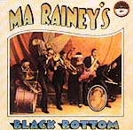
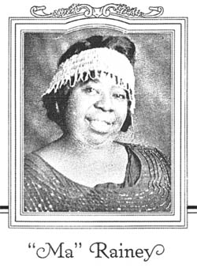
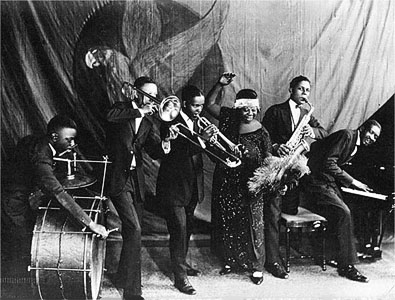

| слушать |
В серии "Золото блюзовой фонотеки": "MA RAINEY'S BLACK BOTTOM" - сборник записей великолепной певицы эпохи "классических" блюзов. |
скачать |
Титул Ма Рейни "Mother Of The Blues" был рекламным трюком фирмы "Paramount". Но доля истины в этом трюке определенно есть. Ма Рейни - самая старшая из известных нам блюзовых певиц. Кроме того, именно ей принадлежит одно из самых ранних свидетельств о знакомстве с блюзом, относящееся к 1902 году... Экстраординарная личность, обладательница голоса широкого и глубокого, в лучших своих записях Ма Рейни создала ряд ярчайших шедевров жанра... Она не обладала разносторонними вокальными способностями, и записывала зачастую однотипные песни. Однако все недостатки становятся незначительными перед превосходной эмоциональной наполненноcтью ее пения. Цельность и сила натуры уживались с язвительным сарказмом и самоирнонией в ее творчестве. В книге "The Best of the Blues". The 101 Essential Albums" авторитетнейший Роберт Сантелли рекомендует собрание ее записей, подготовленное фирмой энтузиастов архаичного и классического блюза: "Yazoo". Альбом носит название по одной из песен сочинения самой певицы: "MA RAINEY'S BLACK BOTTOM" - "Черная задница (основание) мамаши Рейни.". |
 |

Тексты песен Ма Рейни и другие материалы о ней и линки на Harry's Blues Lyrics & Tabs Online (один из лучших блюзовых ресурсов в www!).
Биографическая справка и ссылки у нашего недоброго черного кота.